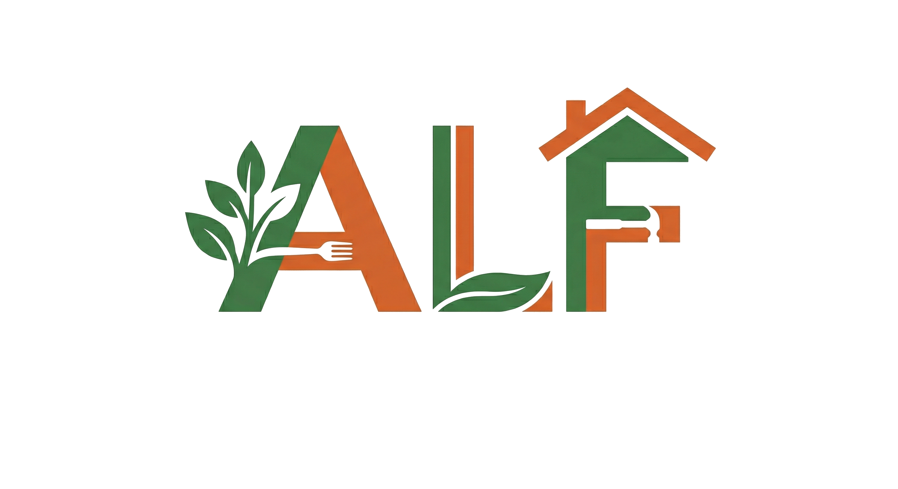

For deg som skal jobbe i sløydsal eller ute på byggjeplass
Arbeidslivsfag 8. trinn
Introduksjon
Dei fleste ulykker skjer i eit uoppmerksamt augeblink. Gode vanar vernar deg kvar dag.
Hørselskadar, støvlunger og elektriske farar er ikkje alltid synlege. Du må vite kva du ser etter.
Alle på arbeidsplassen har ansvar for tryggleiken. Det gjeld deg, og dei rundt deg.
Verneutstyr beskyttar deg mot skadar du ikkje ser kome.
Verneutstyr
Alltid ved maskinelt verktøy
Ved handarbeid, ikkje saman med drill
Lukka sko med solid såle, alltid
Verneutstyr
Verneutstyr
Verneutstyr
Sandalar og ope fottøy er forbode. Lukka sko beskyttar mot fallande verktøy og spikrar.
Ved handtering av tunge blokker og materialar er sko med ståltupp anbefalt.
Spikrar og skruer på golvet er snublefare. Rydd fortløpande, ikkje berre på slutten.
Skjer alltid bort frå kroppen, og tenk gjennom kvar verktøyet hamnar om det sklir.
Skarpe verktøy
Diskuter med sidemannen, 2 minutt
El-verktøy
El-verktøy
Bygger'n
Skadar
Plassering og romleg medvit
Testen har 10 spørsmål. Alle må vera rette for å bestå og få diplom.
Opne HMSkurs_test.html i nettlesaren. Bruk det du har lært i dag!
Trykk utanfor eller ESC for å lukke